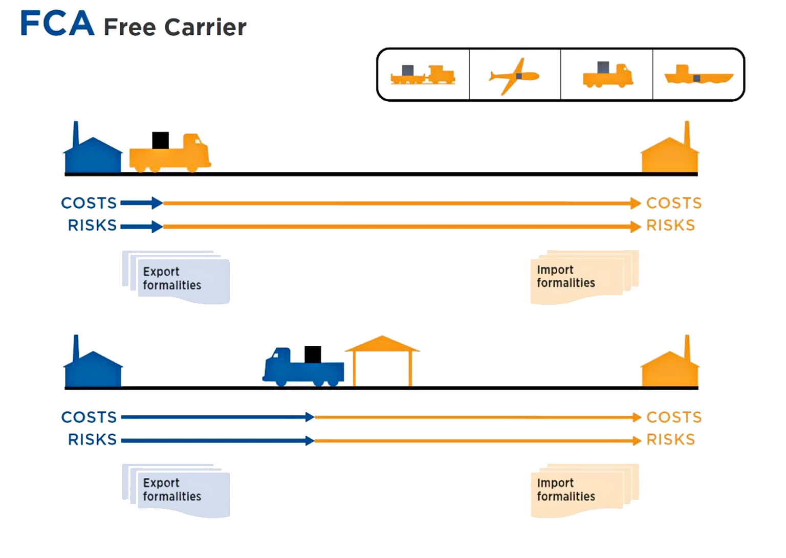
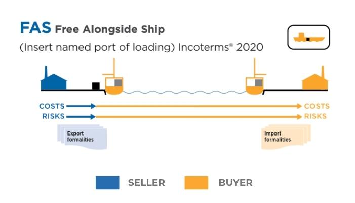
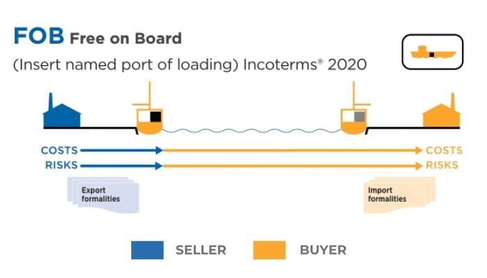
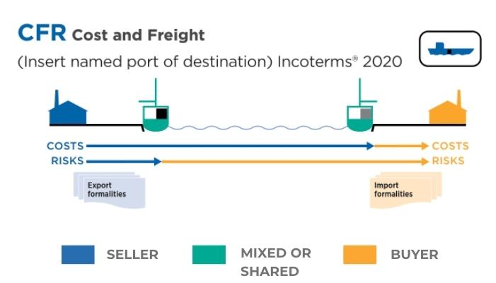
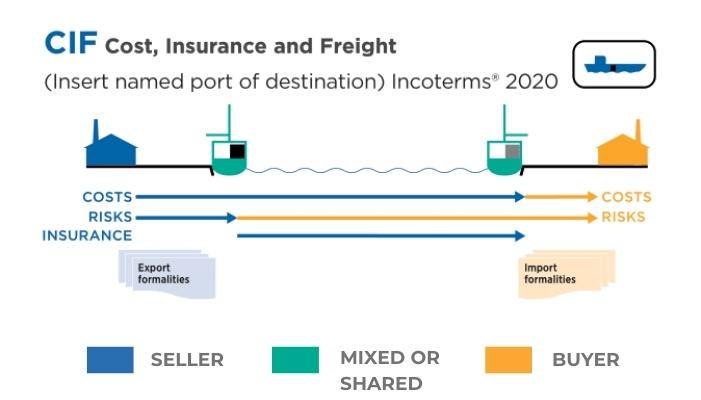
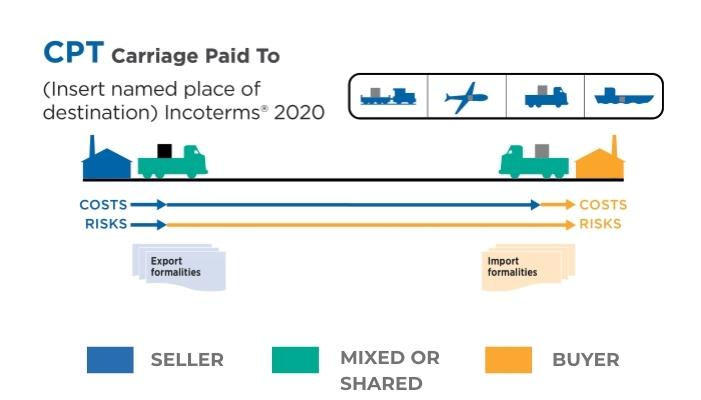
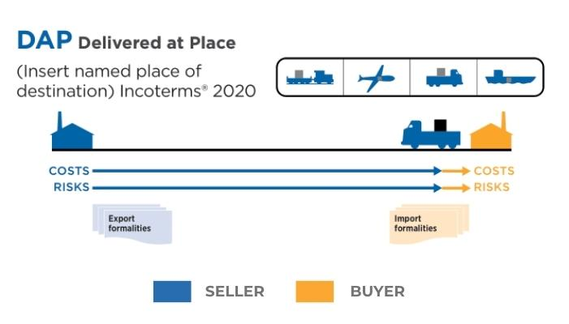
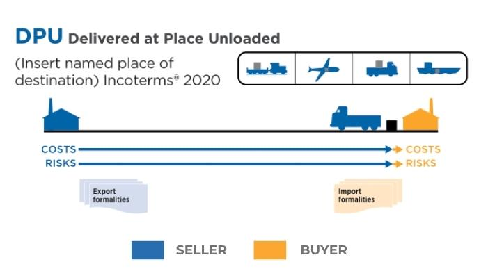
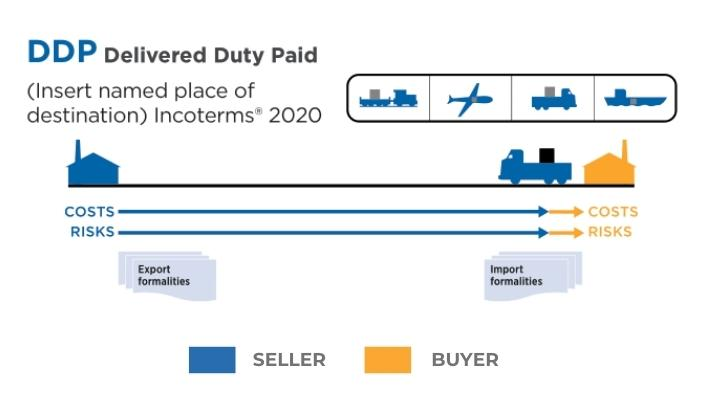

Incoterms 2023
EXW
 EXW – Ex Works
EXW – Ex Works
İhracatçının İş Yerinde Teslim; Tüm masraf ve riskler ithalatçıya ait olmak üzere eşyanın, ihracatçının depo ya da fabrikası gibi belirlenen yerde teslim edilmesidir.
EXW – Ex Works
İhracatçının İş Yerinde Teslim; Tüm masraf ve riskler ithalatçıya ait olmak üzere eşyanın, ihracatçının depo ya da fabrikası gibi belirlenen yerde teslim edilmesidir.
FCA

FCA – Free Carrier
Taşıyıcıya Teslim; Eşyanın, ithalatçının belirlediği taşıyıcıya, ihracatçının ülkesinde belirlenen yerde teslim edilmesidir.
Taşıyıcıya Teslim; Eşyanın, ithalatçının belirlediği taşıyıcıya, ihracatçının ülkesinde belirlenen yerde teslim edilmesidir.
FAS

FAS – Free Alongside Ship
Gemi yanında Teslim; Eşyanın belirlenen deniz taşıtına yüklenmek üzere rıhtım ya da yükleme alanında teslim edilmesidir.
Gemi yanında Teslim; Eşyanın belirlenen deniz taşıtına yüklenmek üzere rıhtım ya da yükleme alanında teslim edilmesidir.
FOB

FOB – Free on Board
Gemide (Gemi Bordasında) Teslim; Eşyanın belirlenen deniz taşıtına yüklenerek taşıma, sigorta gibi maliyet ve sorumlulukların ithalatçıya devredildiği teslim şeklidir.
Gemide (Gemi Bordasında) Teslim; Eşyanın belirlenen deniz taşıtına yüklenerek taşıma, sigorta gibi maliyet ve sorumlulukların ithalatçıya devredildiği teslim şeklidir.
CFR

CFR – Cost and Freight
Navlun Ödenmiş Halde Teslim; Eşyanın belirlenen deniz taşıtına ait taşıma bedelinin (navlun) ihracatçı tarafından ödendiği, sigorta ve diğer masrafların ithalatçıya ait olduğu teslimdir.
Navlun Ödenmiş Halde Teslim; Eşyanın belirlenen deniz taşıtına ait taşıma bedelinin (navlun) ihracatçı tarafından ödendiği, sigorta ve diğer masrafların ithalatçıya ait olduğu teslimdir.
CIF

CIF – Cost, Insurance and Freight
Masraflar, Navlun, Sigorta Ödenmiş Teslim; Yükleme masrafları ile eşyanın ithalatçının ülkesinde belirlenen teslim alanına kadar taşıma bedeli, sigorta masrafları karşılanmış olarak teslim edilmesidir.
Masraflar, Navlun, Sigorta Ödenmiş Teslim; Yükleme masrafları ile eşyanın ithalatçının ülkesinde belirlenen teslim alanına kadar taşıma bedeli, sigorta masrafları karşılanmış olarak teslim edilmesidir.
CPT

CPT – Carriage Paid To
Taşıma Ücreti Ödenmiş Teslim; Belirlenen taşıta ait taşıma bedelinin (navlun) ihracatçı tarafından ödendiği, sigorta ve diğer masrafların ithalatçıya ait olduğu teslimdir.
Taşıma Ücreti Ödenmiş Teslim; Belirlenen taşıta ait taşıma bedelinin (navlun) ihracatçı tarafından ödendiği, sigorta ve diğer masrafların ithalatçıya ait olduğu teslimdir.
CIP
 CIP – Carriage and Insurance Paid To
CIP – Carriage and Insurance Paid To
Taşıma Ücreti, Sigorta ödenmiş Teslim; İhracatçının taşıma ücreti ile sigorta masraflarını ithalatçının ülkesinde belirlenen noktaya kadar ödediği teslim şeklidir.
CIP – Carriage and Insurance Paid To
Taşıma Ücreti, Sigorta ödenmiş Teslim; İhracatçının taşıma ücreti ile sigorta masraflarını ithalatçının ülkesinde belirlenen noktaya kadar ödediği teslim şeklidir.
DAP

DAP – Delivered at Place
Belirlenen Yerde Teslim; Eşya ithalatçının ülkesinde ve belirlenen adrese vergiler hariç tüm masraflar ödenmiş olarak teslim edilir.
Belirlenen Yerde Teslim; Eşya ithalatçının ülkesinde ve belirlenen adrese vergiler hariç tüm masraflar ödenmiş olarak teslim edilir.
DPU

DPU – Delivered At Place Unloaded
DAT’ın yerini almış bu teslim şeklinde ihracatçı malları yükleyip kendi ülkesinin gümrüğünden geçirdikten sonra ana taşıyıcıya yükler ve kararlaştırılan varış yerinde boşaltır. Ancak ithalatçının ülkesindeki gümrükleme, gümrük vergisi ve diğer masraflar ithalatçıya aittir.
DAT’ın yerini almış bu teslim şeklinde ihracatçı malları yükleyip kendi ülkesinin gümrüğünden geçirdikten sonra ana taşıyıcıya yükler ve kararlaştırılan varış yerinde boşaltır. Ancak ithalatçının ülkesindeki gümrükleme, gümrük vergisi ve diğer masraflar ithalatçıya aittir.
DDP

DDP – Delivered Duty Paid
Gümrük Vergileri Ödenmiş Halde Teslim; Eşyanın ithalatçının ülkesinde tüm masraflar ve gümrük vergileri ödenmiş olarak teslim edilmesidir.
Gümrük Vergileri Ödenmiş Halde Teslim; Eşyanın ithalatçının ülkesinde tüm masraflar ve gümrük vergileri ödenmiş olarak teslim edilmesidir.